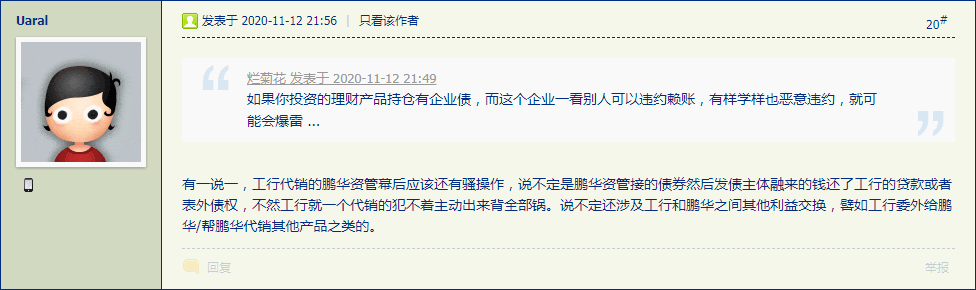
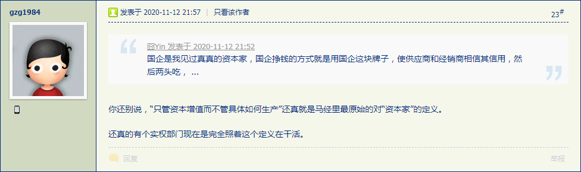
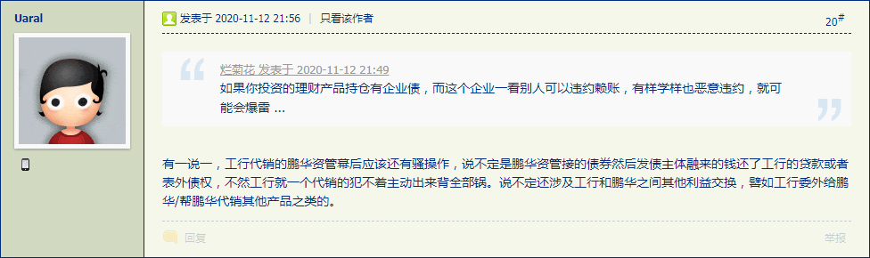
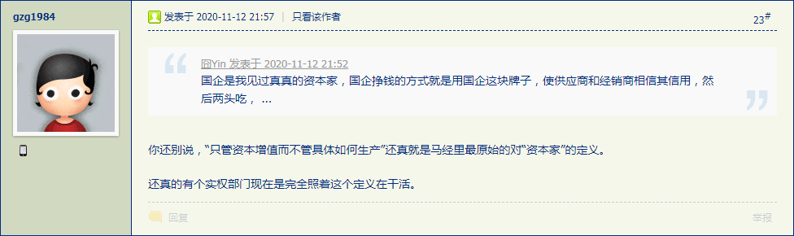

最近第五篇设定慢慢更新了不少内容，看现在的情况，可能会一段一段的直接写完。
就比方说最新内容，出现了类似「金圆券」的「法兰西王冠信用基金」的各种衍生品「史无前例金融创新」，而之前「赎罪券」可以类比「法币」。都有本位面历史事实对照，只是细节因为要参考现实局势影射，所以暂时不能确定，只能含糊其辞。
若是耍钱的朋友从金融专业角度认为这里有漏洞，那漏洞也不在我这里。
具体来说，还得看比特币以及其它区块链货币如何单方面「兑换」电力和显卡，还有非死不可的「天秤币」怎么到处招摇撞骗，能否发动已经把全球各国渗透得如同筛子一般的间谍特务卧底配合。
而「现实局势」就比方说这个：

14:30:47【比特币虚拟财产属性首次获司法机关认可】18日，首例比特币财产侵权纠纷案在杭州互联网法院开庭宣判。本次庭审法院确认了比特币“虚拟财产”属性，这也是中国法院首次对于比特币等数字货币虚拟的财产属性进行认定。关于比特币虚拟财产的属性，杭州互联网法院认为，比特币具有财产作为权利客体需具备的价值性、稀缺性、可支配性，应认定其虚拟财产地位。（中证网）
在《料敌从宽数学渣》当中已经问过了九省通衢の煎蛋的色目情报掮客，汴梁储备银行发行的交子和临安储备银行发行的会子未必能自由兑换，当然「靖康三十八年」发行的「永续债」肯定打水漂喽。
补充素材：
06:24:28【永续债打破惯例变“真永续”？ 投资者受刺激“用脚投票”】续债难道真的就“永续”下去不赎回了？投资者有点“蒙圈”。近日，债市频频发生“真永续”状况，紫光集团、青海国投先后决定不行使其永续债赎回权，引发轩然大波，相关债券出现大幅波动。
07:45:36 永续债续期是否属于变相违约？多位市场人士认为，从合同条款来看，永续债续期并未构成违约，但同时也打破了市场惯例，释放出企业面临流动性压力的信号，对投资者信心造成一定冲击。（上证报）
补充素材：《信用债市场已经疯了……》
 



永煤违约，政府搞了一波骚操作，违约前把公司底下优质资产转移了，把整个市场信用债的信心直接打崩
简单说一下就是今年一些评级为AAA的企业债到期，企业却没赎回，直接恶意违约了，监管层看样子都没什么动作。导致债券市场信心遭受很大的打击，如果一直不处理拖下去这个可能真的会造成金融系统性风险。个人认为比马统领造成的影响坏的多。
说的是某些地方城投和国企恶意逃废债，彻底躺平
而且是明确告诉你还不了钱，然后政府把资产从发债主体中大大咧咧划走的那种
譬如说华晨集团就在违约前政府把华晨宝马的股权划走了，债券持有人大会之类的制度形同虚设
永城煤业10月份还发过10个亿的中票，结果前几天一笔短期融资券说自己没钱兑付啦！
大致就是这样吧
当然还有什么之前青海盐湖负债几百亿，然后资产还是有百来亿（盐化工资产），然后因为几百万债权的债权人向法院请求破产申请结果法院就受理了？
再以及什么海航提早半小时说半小时后开债券持有人大会这种骚操作也是教会了各种想要躺倒的企业
不要笑机构投资者傻，你想想自己有没有买过债基乃至货币基金。永城煤业违约前可是AAA，期限也在货基投资范围内。
打破刚兑和逃废债不是同一个意思，发债主体的资产政府随便划可不是打破刚兑。
华晨集团债躺倒不还了,因为违约前搞了波股权转让骚操作,现在债务人只能向一个空壳公司要钱
然后永煤也把中原银行股权转走,也不还钱了
然后市场一看共同点:AAA级国企, 好家伙,这年头国企都没法信了, 那么宁可杀错都不能放过了
还有人总结了,上面这两家违约的都是青海出来的领导, 当年盐湖债务重组也是吃相难看,这是要把"成功"经验带到全国么, 于是青海出来的领导现在呆的企业也一律避险
如果你投资的理财产品持仓有企业债，而这个企业一看别人可以违约赖账，有样学样也恶意违约，就可能会爆雷。
比如前段时间工行代销的鹏华资管产品就是这样
国企是我见过真真的资本家，国企挣钱的方式就是用国企这块牌子，使供应商和经销商相信其信用，然后两头吃，吃垮了再换一家，反正总有人信国企的信用。所以跟国企做生意前，先考虑下自己关系硬不硬，不然就是国企利润的增长点。
有一说一，工行代销的鹏华资管幕后应该还有骚操作，说不定是鹏华资管接的债券然后发债主体融来的钱还了工行的贷款或者表外债权，不然工行就一个代销的犯不着主动出来背全部锅。说不定还涉及工行和鹏华之间其他利益交换，譬如工行委外给鹏华/帮鹏华代销其他产品之类的。
你还别说，“只管资本增值而不管具体如何生产”还真就是马经里最原始的对“资本家”的定义。
还真的有个实权部门现在是完全照着这个定义在干活。
因为貴様色目钦定文抄公「复制并成功」之后引领激烈的政治和意识形态斗争新动向，还得需要一段时间传达到被渗透的如同筛子一般的全球各国政府和民间机构当中去，所以耍钱的朋友奔走相告的重要情报总有滞后性。
于是先把第五篇设定的结尾写完，中间慢慢填空。
结尾当中的扛着傀儡裸奔的场景，来自百善の新时代中国特色社会主义大好形势下繁荣的中文互联网上各个识大体顾大局懂政治讲规矩守纪律的宣传阵地，稍微一搜就有三条典型情报：
俄罗斯搞笑游泳比赛 怀抱“充气娃娃”渡河（图） 男子深夜扛十字架充气娃娃裸奔，一裸女同行 两男子抱充气娃娃在北大未名湖裸奔，自称行为艺术（图）艺术来源于生活又高于生活嘛，色目情报掮客敢于不打自招爆料泄漏国家机密兼宇宙奥秘，咱精神病仆街写手不入流码农数学渣就敢当作素材加以运用。
顺便，各位读者可以自己尝试那个「三指掐诀」以便「双管齐下」爱抚肉便器の前列腺（如果有的话）之手势，也是来自现实政治和意识形态斗争。这个手势看上去像狗头，把新疆渗透得如同筛子一般的土耳其泛突厥主义组织「灰狼」就是这么互相打招呼的。


但实际上，这里是埃及神话中狼头人身的「阿努比斯」的形象。


既然娱乐至死の色目逗哔到处贯彻落实「rule 34」重要指示精神，将所有严肃话题色情化，那么咱在野的职业政治家兼职业神棍就可以反其道而行之，将所有的色情话题都赋予充沛的政治和意识形态内容并引领激烈的政治和意识形态斗争新动向。
在注释〔九〕当中已经提到了以珍珠象征的阿民念主义和以郁金香象征的加尔文主义的针锋相对，以及情趣道具拉珠之间的关系。而《之五》《之六》两篇设定的缘起本来就是注释〔６１〕当中提到的「学以致用娱乐至死の情报工学神童贵种大少爷」的划时代高科技创意，当然更要变本加厉。
再看一段「权威观点」：
［23:15:00］美联储布拉德：加密货币与美国国内货币产生了不统一的偏离。货币必须拥有可靠性和价值属性。固定汇率机制往往最终都会瓦解。
［23:14:19］美联储布拉德：加密货币是全球货币竞争的一部分。加密货币可能产生非法交易，导致汇率出现波动。
在第八篇设定当中出现了金币和银币的「固定汇率」，实际上这是欧洲中世纪认定的「天然比价」，当时矿产和冶金相关领域生产力长期没有变化，所以金银之间「1:12」的汇率就这么成为惯例了也。
最后把第六篇设定《马耳他护屄骑士团》开个头，素材来自《志士酒酣看宝剑，美人泪尽倚鸳机》，台词都是活跃在九省通衢の煎蛋的色目情报掮客提供的原版，一字不改照抄不误，等着貴様色目钦定文抄公「复制并成功」然后再于深圳南山法院「依法治国」倒打一耙贼喊捉贼，与九省通衢の色目情报掮客争夺「版权」。
估计接下来一段时间内不会有什么进展，因为利雅得兲降伟人沙特太子买买提·本·所罗门（汉名马本骚）指使15个摩萨德特工入境土耳其将卡舒吉大卸八块的热点已经过去了，而陈果/孙小果/李林宸的热点即将过去，按照我中华兲朝上国政治规矩和组织纪律，大事化小小事化了罚酒三杯下不为例。
而为了转移人民群众视线而炮制的应景热点，当然就是第六次中东战争兼第三次世界大战喽，再观察沙特表现可也。